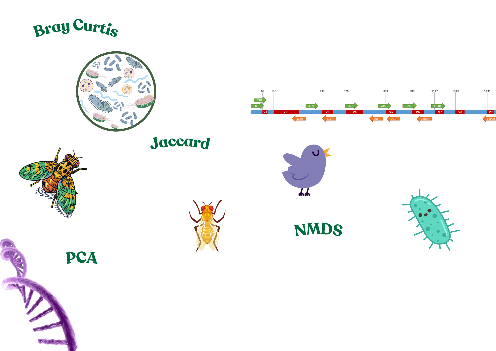

We have explored Beta Diversity methods, PCA, and NMDS separately, but understanding how they relate (or do not relate) to each other could be an essential step in having a true understanding of all of these.
This section will show you how these tools collectively help us interpret complex microbial community differences.
Let’s see how well you can integrate these concepts to gain a fuller picture of microbial ecology.
Alpha Diversity vs. Beta Diversity - when to use them.
PCA vs. NMDS – What is the difference?
Both PCA (Principal Component Analysis) and NMDS (Non-metric Multidimensional Scaling) are methods used to reduce the dimensionality of complex microbial data and visualise patterns — but they do so in fundamentally different ways.
PCA is a linear method that assumes your data can be explained by axes that maximize variance. It works best when your distances are normally distributed.
NMDS, on the other hand, is a non-linear, rank-based method. It doesn’t use the raw distances, but rather the rank order of dissimilarities.
Eucledian distances: PCA vs. NMDS.
PCA assumes that the data lies in a linear Euclidean space. It relies on straight-line distances and angles between data points. PCA uses these Euclidean distances implicitly when calculating the covariance matrix, which determines the directions of greatest variance in the dataset.
NMDS does not assume linearity or metric relationships. Instead, it works with a dissimilarity matrix, which can be based on Euclidean distances or other measures (like Bray-Curtis or Jaccard). Importantly, NMDS only considers the rank order of the distances — not their actual values — and attempts to preserve these ranks in a lower-dimensional space..